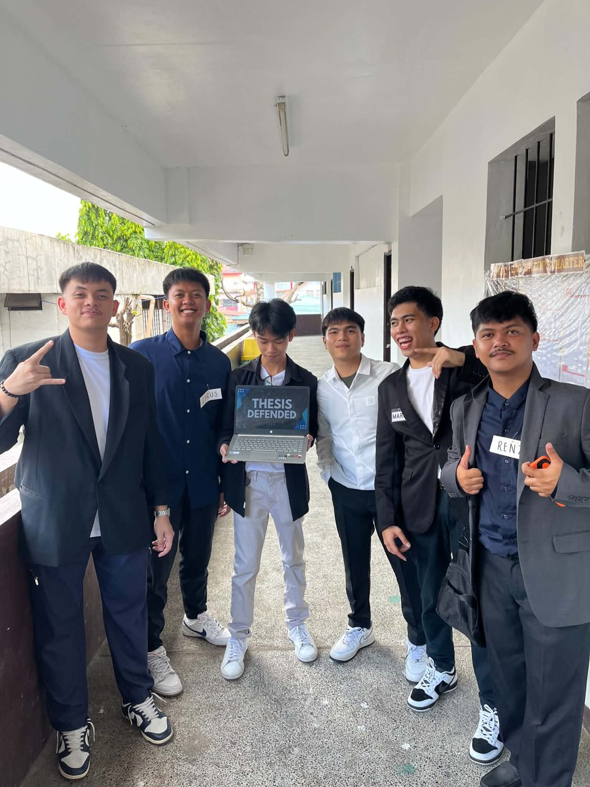
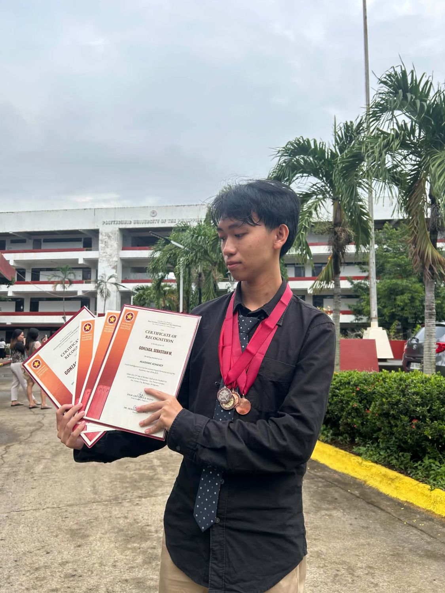
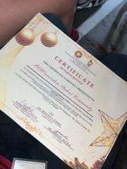
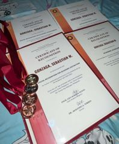
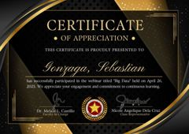
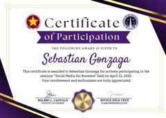
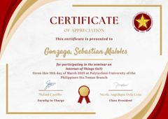
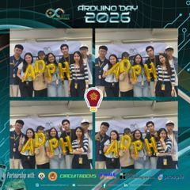
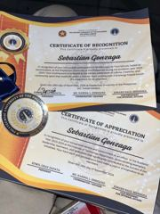
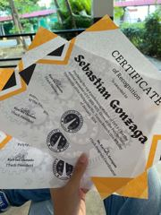

I build things, break things, and figure out why they broke.
01 / About
I'm an Information Technology student who enjoys building systems, experimenting with AI, and learning new technologies. I like turning ideas into practical applications while continuously improving my development skills.
Most of what I know came from breaking things first — a script that wouldn't run, a database that wouldn't connect — and staying with the problem until it made sense. That habit is what pulls me toward AI and systems work now.
hover a line
02 / Toolkit
No percentages. Just the things I actually reach for, and the order I learned them.
03 / Projects
Twelve things I've built, sorted by type. Pick a category.
04 / R.A.I.N
R.A.I.N is an AI-assisted disaster preparedness web app for Tanauan City, Batangas. These are its core monitoring pages. Step through them, or open the full app.
05 / Lab
Small, unfinished, occasionally weird. Press run.
06 / Experience
Mar – May 2025 · Santo Tomas City Hall
Supported database management and the improvement of internal systems, and built Excel-based scripts that streamlined everyday tasks and processes.
Jul – Sep 2024 · Tanauan City Hall
Handled data entry, digital record organization and database tasks, and assisted with document preparation and basic troubleshooting.
Coursework & Practice
Practiced core programming and algorithmic problem solving across Python, Java, and C++ through class projects and independent practice.
Ongoing
Continuously debugging, researching, and troubleshooting — treating every stuck moment as part of the process rather than a setback.
07 / Education & Journey
BS Information Technology · Present
Diploma in Information Technology · Bronze Awardee
AY 2022–2023
Began the Diploma in Information Technology, made the President’s List in both semesters, and finished 2nd semester as a Top 4 performing student of DIT 1-1.
Nov 2023
Passed national assessment in installing and configuring computer systems, setting up networks and servers, and maintaining and repairing systems.
AY 2023–2024
Served as an officer of the department and joined the campus Mobile Legends Tournament, placing 2nd. Both recognized in November 2024.
Mar – May 2025
Attended seven talks on IoT, digital currencies, social media for business, SEO, big data, analytics and AI in cyber defense.
Oct 2025
Recognized as Academic Achiever with Special Recognitions for academic distinction and the NC II pass, plus an Outstanding Service Award for the Graduation Steering Committee.
Dec 2025
Took part in the Miniature Exhibit as part of the student community.

Thesis defended, with the team08 / Certificates & Achievements
Awards, licenses, seminars and campus events from my time at PUP Sto. Tomas.


EventISKOnnovators Student Community · Central Student Council

AwardPUP Sto. Tomas Campus
PUP Sto. Tomas Campus · AY 2024–2025
Passing Computer Systems Servicing NC II
Graduation Steering Committee 2025
PUP Sto. Tomas Campus
PUP Sto. Tomas Campus

WebinarPUP Sto. Tomas Campus

SeminarPUP Sto. Tomas Campus

SeminarPUP Sto. Tomas Campus
PUP Sto. Tomas Campus
PUP Sto. Tomas Campus

EventArduino Day Philippines 2026

AwardInstitute of Technology · PUP Sto. Tomas
Institute of Technology · AY 2023–2024

Award2nd Semester, SY 2022–2023 · PUP Sto. Tomas
Valid until Nov 5, 2028
Polytechnic University of the Philippines
Polytechnic University of the Philippines
09 / Why Work With Me
Less about buzzwords, more about how I show up on a team and a problem.
I'd rather ask a question and learn it right than pretend I already know.
Comfortable switching languages, tools, or plans when the project needs it.
I like sitting with a hard bug longer than I probably should — and I usually get there.
I communicate early, share progress often, and don't let people guess where I'm at.
New tools, new frameworks, new corners of AI — I want to know how they work.
Just as comfortable in technical deep-dives as in non-technical, people-facing work.
10 / Contact
Available for:
built somewhere in the Philippines · curiosity = true